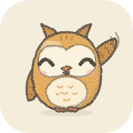

앱으로 설치하기
집중 놀이터를 홈 화면(또는 바탕화면)에 두면 앱처럼 바로 열 수 있어요. 무료이고, 결제나 광고가 없어요.
지금 이 기기는
확인하는 중이에요…
기기별 설치 방법
안드로이드 폰·태블릿 지금 쓰는 기기
- 크롬 브라우저로 집중 놀이터 웹 주소를 열어요.
- 위에 "앱으로 설치" 단추가 보이면 눌러요. 안 보이면 오른쪽 위 ⋮ 메뉴를 눌러요.
- "앱 설치" 또는 "홈 화면에 추가"를 고르고, 한 번 더 "설치"를 눌러요.
- 홈 화면에 생긴 집중 놀이터 그림을 누르면 앱처럼 열려요.
아이폰·아이패드 지금 쓰는 기기
- 사파리로 웹 주소를 열어요. (다른 앱 안의 화면이나 다른 브라우저에서는 메뉴가 다를 수 있어요.)
- 화면 아래(아이패드는 위)의 공유 단추(네모에서 위로 화살표가 나온 모양)를 눌러요.
- 목록을 밀어 올려 "홈 화면에 추가"를 눌러요.
- 오른쪽 위 "추가"를 누르면 홈 화면에 그림이 생겨요.
아이폰에는 "앱으로 설치" 단추가 나오지 않아요. 위의 방법으로 해 주세요.
PC (윈도우·맥) 지금 쓰는 기기
- 크롬 또는 엣지로 웹 주소를 열어요.
- 위에 "앱으로 설치" 단추가 보이면 눌러요. 또는 주소창 오른쪽 끝의 설치 모양 단추를 눌러요.
- 안 보이면 크롬은 ⋮ 메뉴 → "캐스트, 저장, 공유" → "페이지를 앱으로 설치", 엣지는 ⋯ 메뉴 → "앱" → "이 사이트를 앱으로 설치"를 골라요. (브라우저 버전에 따라 이름이 조금 달라요.)
- 시작 메뉴나 바탕화면에 생긴 집중 놀이터를 누르면 따로 창이 열려요.
파이어폭스·맥 사파리의 일반 창은 PC 앱 설치를 지원하지 않을 수 있어요. 그래도 웹에서 바로 놀 수 있어요.
알아 두면 좋아요
- 처음 한 번은 인터넷에 연결된 상태로 열어야 해요. 그다음부터는 인터넷이 없어도 열려요.
- 놀이 기록은 그 기기 안에만 저장돼요. 기기마다 따로이고, 밖으로 보내지 않아요.
- 아이폰은 사파리와 홈 화면 앱이 저장 공간을 따로 써요. 홈 화면에 추가한 뒤에는 그 앱 안에서 아이를 만들어 주세요.
- 앱을 지우거나 브라우저의 사이트 데이터를 지우면 기록도 같이 사라져요. 보호자 설정 → 기록 보기 → "기록 내보내기"로 가끔 백업해 두세요.
- 새 버전이 나오면 인터넷에 연결된 상태로 앱을 한 번 열고, 완전히 닫았다가 다시 열면 바뀌어요.